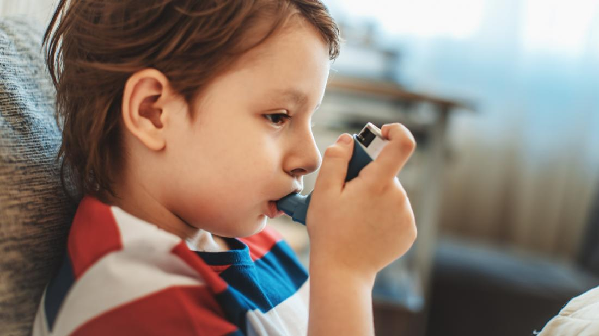

ေလျပြန္ေယာင္ျခင္း (Bronchitis)

ရာသီဥတုအေျပာင္းအလဲေၾကာင့္ တုပ္ေကြးေရာဂါ ျဖစ္တတ္ပါတယ္။ အမ်ားစုကေတာ့ ေ၀ဒနာသက္သာသြားေပမဲ့ တခ်ဳိ႕ကေတာ့့ မေပ်ာက္ပဲ ေလျပြန္ေယာင္တဲ့ ေ၀ဒနာကိုပါ ခံစားရတတ္ပါတယ္။
အသက္ရွဴတဲ့ ေလျပြန္ကို ေရာဂါပိုးကူးစက္ရာကေန တစ္ဆင့္ ေခ်ာင္းဆိုးတာ၊ ခြ်ဲၾကပ္တာ တို ့ ျဖစ္တတ္ပါတယ္။ ဘက္တီးရီးယား ၊ ဗိုင္းရပ္စ္ပိုးနဲ ့ ေဆးလိပ္ေသာက္တာေတြက ဒီေရာဂါကို ပိုၿပီး ဆိုးေစပါတယ္ ။
ျဖစ္ေစနိုင္ေသာ အေၾကာင္းအရာမ်ား
- ခႏၶာကိုယ္ ခုခံအားစနစ္ က်တာ
- ေဆးလိပ္ေသာက္တာ ဒါမွမဟုတ္ ေဆးလိပ္ေသာက္သံုးသူနဲ႔ အတူေနထိုင္တာ
- အသက္ရွဴလမ္းေၾကာင္းဆိုင္ရာ ေရာဂါေတြ ျဖစ္ေစတဲ့ ပတ္၀န္းက်င္မွာ အလုပ္လုပ္တာ- ဥပမာ ေက်ာက္မီးေသြးလုပ္ငန္း၊ ေမြးျမဴေရး လုပ္ငန္းေတြနဲ႔ နီးစပ္တာ)
- ေလထုညစ္ညမ္းတာ
-
-
-
-
ေရာဂါလကၡဏာမ်ား
- ရင္က်ပ္ျခင္း
- ေခ်ာင္းဆိုးသလိပ္ပါျခင္း ( အျဖဴေရာင္ ၊ အ၀ါေရာင္ ၊အစိမ္းေရာင္ သလိပ္မ်ား ထြက္ျခင္း)
- အသက္ရွဴရခက္ျခင္း
- အသက္ရွဴစဥ္ တရႊီရႊီျမည္ျခင္း
- ခႏၶာကိုယ္အနွံ ့ ကိုက္ခဲျခင္း
- အဖ်ားေငြ ့ေငြ ့ဖ်ားျခင္း
- နွာေစးျခင္း
- လည္ေခ်ာင္းနာျခင္း တို႔ ခံစားရနိုင္ပါတယ္ ။
ဒီလို ေ၀ဒနာေတြျဖစ္လာၿပီဆိုရင္ေတာ့ ဆရာ၀န္နဲ႔ အျမန္ဆံုးကုသသင့္ပါ တယ္။
ေရာဂါ ရွာေဖြျခင္း
ဆရာ၀န္နဲ႔ တိုင္ပင္ၿပီး ေရာဂါ ရာဇ၀င္ စစ္ေဆးေမးျမန္းတာ၊ ေသြးတြင္း ေအာက္ဆီဂ်င္ ပမာဏ တိုုင္းတာ ၊ ဓာတ္မွန္ရိုက္တာ၊ ေသြးစစ္တာ စတာေတြကို ျပဳလုပ္ၿပီး ရွာေဖြႏိုင္ပါတယ္။
ကုသျခင္း
ေရာဂါစစ္ေဆးမႈ ရလဒ္ေပၚ မူတည္ၿပီး ကုသမႈ ခံယူရပါမယ္ ။ ဘက္တီးရီးယားေၾကာင့္ျဖစ္ရင္ ပဋိဇီ၀ေဆးေတြကို ဆရာ၀န္ေတြရဲ႕ ညႊန္ၾကားခ်င္းအတိုင္း ေသာက္သံုးႏိုင္ပါတယ္။
ပန္းနာရင္ၾကပ္ ဒါမွမဟုတ္ ဓာတ္မတည့္တာေတြ ရွိရင္ေတာ့့ ရွဴေဆးဘူး လိုအပ္မွာပါ ။
ေရာဂါလကၡဏာသက္သာေစဖို႔
- ေရမ်ားမ်ားေသာက္ပါ။
- ပံုမွန္အနားယူပါ။
- ဆရာ၀န္နွင့္ တိုင္ပင္ၿပီး အကိုက္အခဲေပ်ာက္ေဆးနဲ႔ေခ်ာင္းဆိုး ေပ်ာက္ေဆး သံုးပါ။
- ေရေႏြးေငြ ့ ရွဴပါ။
ေလျပြန္ေယာင္္တာကို ကာကြယ္လို ့ ရလား
ကာကြယ္လို႔ရပါတယ္။ အထက္မွာ ေဖာ္ျပထားတဲ့ ေရာဂါျဖစ္ေစႏိုင္တဲ့ အေၾကာင္းအရာေတြကို အဓိက ေရွာင္ရမွာပါ။
- ေဆးလိပ္ျဖတ္တာ၊
- တုပ္ေကြး ကာကြယ္ေဆးထိုးတာ၊
- လက္ကို မၾကာခဏ ေဆးေၾကာတာ၊
- ဖုန္ထူထပ္တဲ့ ေနရာေတြကို မျဖစ္မေန သြားရတဲ့ အခါမွာ နွာေခါင္းစည္း-mask ၀တ္ဆင္တာ စတာေတြ ျပဳလုပ္ၿပီး ႀကိဳတင္ ကာကြယ္နိုင္ပါတယ္။
Source- ေဒါက္တာ ေအာင္ျပည့္ၿဖိဳးဦး